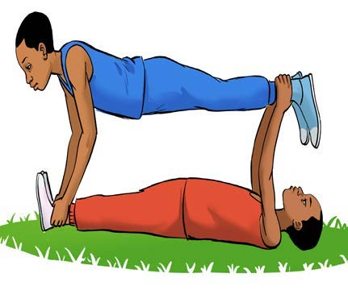
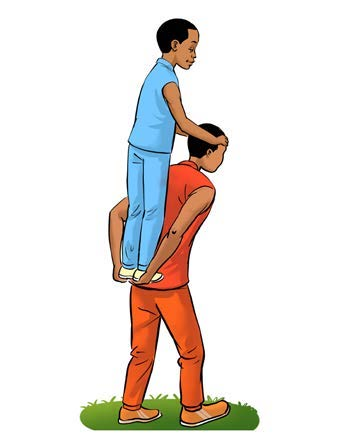
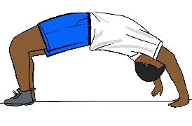
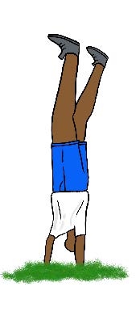
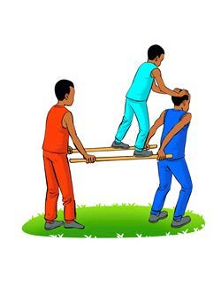
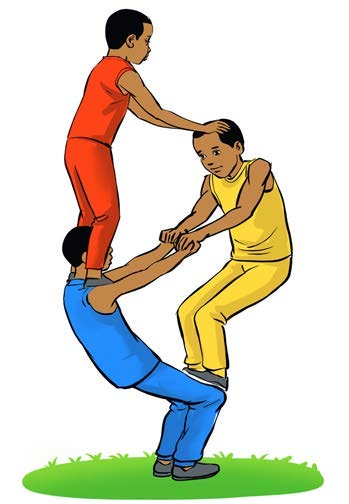

Sarakasi ni matendo ya ujongeaji wa mwili yakiambatana na mdundo. Inahusisha kujinyoosha, kujikunja, kuruka na kutembea kwa mitindo mbalimbali kwa kufuata mdundo.
Chunguza picha, kisha jibu maswali yanayofuata:






Sarakasi kwa mitindo tofautiMchezaji akifanya sarakasi ya kwanza.Mchezaji akifanya sarakasi ya pili.Mchezaji akifanya sarakasi ya tatu.Mchezaji akifanya sarakasi ya nne.Mchezaji akifanya sarakasi ya tano.Mchezaji akifanya sarakasi ya sita.